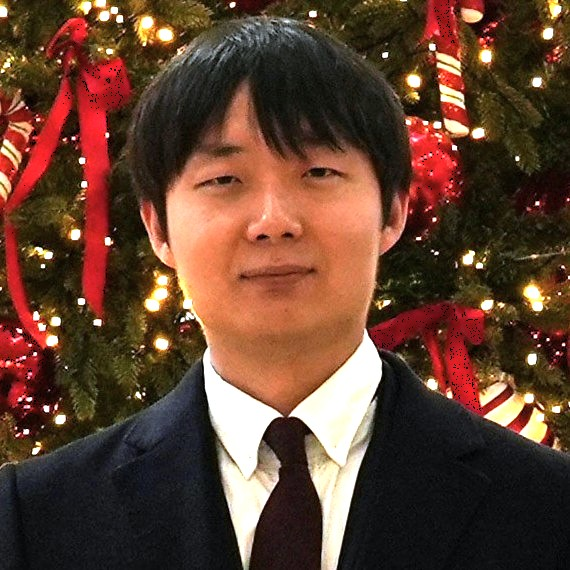

Haein Jung
Postdoctoral Research Associate
Division of Applied Mathematics, Brown University
Boiling Physics
My research aims to uncover the governing physics of boiling and enable reliable prediction through artificial intelligence, with potential applications in high-heat-flux thermal management.
Research · CV · Google Scholar · GitHub

Research
Making Boiling Predictable
Despite decades of research, predicting boiling heat transfer, critical heat flux and the onset of flow instability across operating conditions remains a major scientific challenge. My goal is to advance predictive understanding of boiling beyond the limitations of empirical correlations, ultimately enabling more effective and reliable cooling.